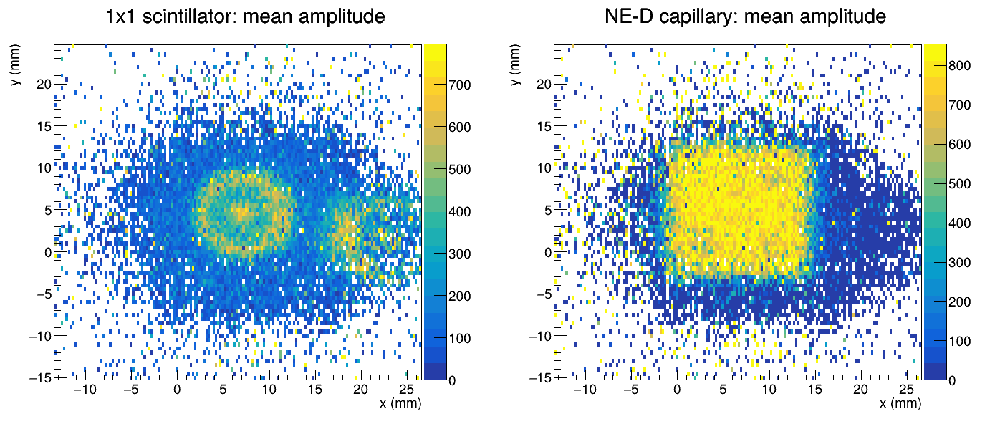
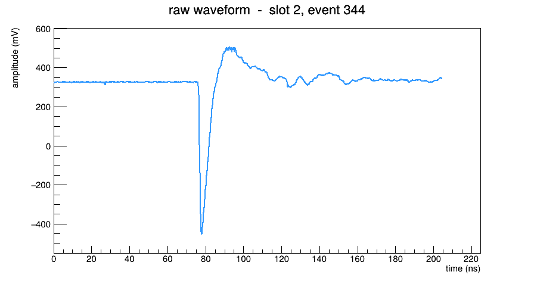
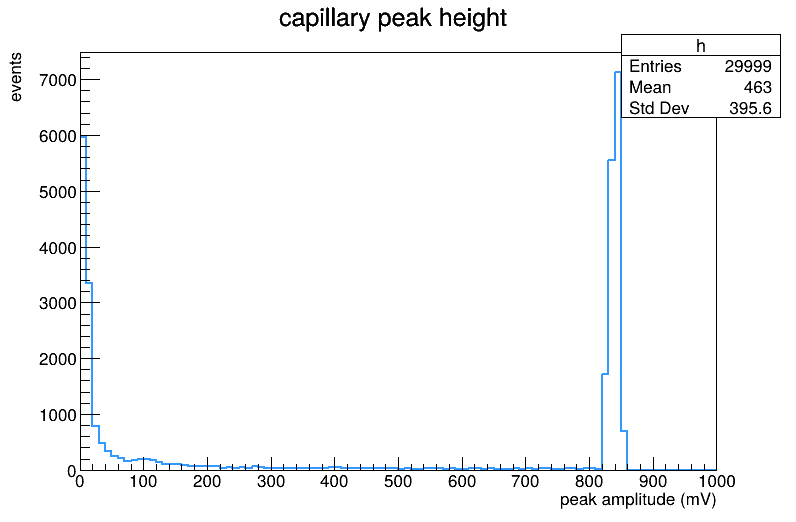
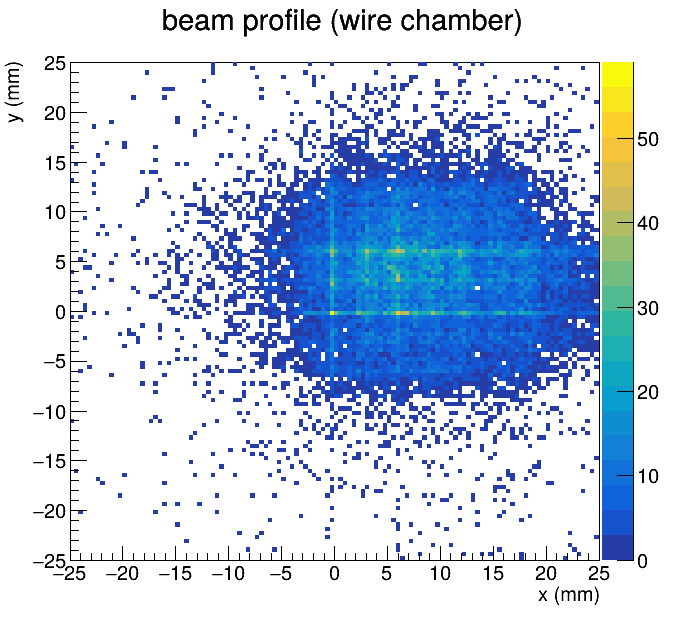

By the end you will have made this with your own code — a map of the beam coloured by how much signal each detector saw. On the left, the 1×1 cm scintillator reveals two bright connector rings; on the right, an NE-D timing capillary shows the calorimeter lit up as a sharp square, edges and all. Each step below builds toward it.

Install ROOT on your Mac
ROOT is the analysis toolkit physicists use to open these files, loop over events, and make plots. The painless way to get it on a Mac is Homebrew, the Mac package manager.
1a. Open the Terminal app (press ⌘ Space, type "Terminal", hit Return).
If you've never used Homebrew, install it by pasting this one line and pressing Return:
It will ask for your Mac password and may ask you to install Apple's "command line tools" — say yes.
When it finishes it prints two lines starting with eval — copy-paste and run them so your
shell can find brew.
1b. Now install ROOT (this downloads a few hundred MB and takes a few minutes):
1c. Check it worked:
You should see something like ROOT Version: 6.xx/xx. Start ROOT with root -l
(the -l just skips the splash screen), and quit any time by typing .q
and Return. That dot-q is your escape hatch — remember it.
The alternative is conda: install Miniforge, then
conda create -n root -c conda-forge root and conda activate root.
Either route gives you the exact same root command used below.
Check yourself
root --version and the Terminal says
command not found. What happened, and what's the fix?
Answer: Your shell can't find the ROOT program — almost always because the Homebrew
eval lines (which add brew's tools to your PATH) weren't run, or
you opened a fresh Terminal that didn't pick them up. Re-run the two eval lines brew
printed, or just close and reopen Terminal, then try again.Get the code and the data
2a. The code. Grab the project (it has the helper file and the four little macros you'll run). In Terminal, go somewhere sensible and clone it:
The files for this lab live in the student/ folder. Everything below is run from the
top of the RADiCAL folder (the one you just cd'd into).
2b. The data. The data files are large, so they aren't in the repository — they live on
CERNBox, organized in one tree: datasets/2023/raw/ (raw ~2 GB waveform runs)
and datasets/2023/reduced/<BUILD>/ (small ~12 MB analysis ntuples). The folder
structure on CERNBox matches the repository — download into the same paths.
Replace this box with the public share link, e.g.
RADiCAL test-beam data on CERNBox →.
The CERNBox layout mirrors datasets/2023/ (see datasets/2023/README.md).
For this lab, download one raw run to start with — a 150 GeV run,
RUN1258_150_GeV.root — into datasets/2023/raw/:
(CERNBox public shares download by appending /download
to the share link.) For the full cross-build analysis, grab the small
datasets/2023/reduced/ files instead — see datasets/2023/README.md.
2c. Sanity-check the download — a truncated 2 GB file is the #1 cause of "it crashed":
It should report roughly 2.0G. If it's a few KB or MB, the download failed — get it again.
Check yourself
Answer: Each run is ~2 GB and there are hundreds of runs — that's far past what git or GitHub is built to hold, and you rarely need all of it at once. Code (kilobytes, changes often, benefits from version history) lives in git; bulk data (gigabytes, never edited) lives on a data store like CERNBox. Keeping them separate is standard practice.
Open the file and look inside
A ROOT file is a little filesystem of its own. Inside ours is one TTree named
pulse — think of a TTree as a spreadsheet where each row is one beam event and each
column is a "branch." Let's open the file and poke around interactively:
Now at the root [0] prompt, type these one at a time:
The two branches that matter are big arrays of numbers:
| Branch | What it is |
|---|---|
| amplitude | 36×1024 = 36864 floats: the voltage (mV) of every sample of all 36 channels |
| timevalue | 4×1024 = 4096 floats: the time (ns) axis for the four digitiser groups |
| run, event0 | which run, and which event number within it |
Every event is 36 little oscilloscope traces, each 1024 samples long, recorded at 5 billion samples per second (one sample every 0.2 ns). Your whole job in analysis is turning each trace into a number — "how big?" or "when?" — and then histogramming those numbers.
Check yourself
pulse->GetEntries() returns about 30000. The amplitude branch has
36864 numbers. How many individual voltage samples did the digitiser record in this one run?
Answer: ≈ 30000 × 36864 ≈ 1.1 billion samples. That's why the file is 2 GB — and why we reduce each 1024-sample trace down to a couple of numbers before doing physics.
Draw one waveform — meet the data
Before looping over everything, let's look at a single trace with your own eyes. First, the one
idea you need to navigate the amplitude array: the 36 channels ("slots") are laid end to
end, so slot s starts at index s×1024. The helper file
student/radlab.h wraps that up:
The macro student/drawWaveform.C uses those to pull out one slot's 1024 samples and plot
them. Its heart is just:
Run it on slot 2 (the NE-D timing capillary), event 344:

pedestal − (lowest sample) ≈ 779 mV here. The wiggle afterward is normal electronics
ringing. Try other slots: 7 is an MCP clock, 15 is the 1×1 trigger.The signal cables carry negative-going pulses, so a bigger signal means a lower voltage. We first measure the quiet baseline (the pedestal, averaged over early samples before the pulse), then the peak height is how far below that baseline the trace dips. That flips the dip into a tidy positive number in millivolts.
Check yourself
Answer: No — not every particle deposits signal in every capillary. Event 0 simply didn't light up NE-D much. That's real physics, and it's exactly why we loop over many events and look at distributions rather than trusting any single one.
Your first loop — a peak-height spectrum
One waveform is an anecdote; the distribution over all events is the physics. The peak-finder from
radlab.h is exactly the rule from Step 4, written once:
Now loop over every event, measure NE-D's peak, and fill a histogram
(student/peakSpectrum.C):
Run it (the + tells ROOT to compile it, which is much faster on a 2 GB file):

Check yourself
Answer: The very first DRS4 samples can be noisy, so we skip them — and samples 3–52 are early enough to be safely before the pulse arrives, so they measure the true quiet baseline. Averaging the whole trace would fold the pulse itself into the "baseline" and bias it.
Find the beam — wire-chamber position
To make a map, we need to know where each particle went. That's the job of the wire chamber: four planes (Right, Left, Down, Up). A hit drifts to each plane, and the particle's position is encoded in the difference of arrival times between opposite planes — so we need the time of each pulse, not its height:
The four planes and the mm-per-ns scale are named in radlab.h
(WC_R, WC_L, WC_D, WC_U, WC_SCALE). The loop in student/beamProfile.C:

TH2F): each bin counts
how many tracks landed there. Next we'll colour it by signal instead of counts, and the detector hardware
appears.Check yourself
findPeakTime, but in Step 5 we used
findPeak (height). Why the different quantity? Answer: Position in a drift chamber is encoded in timing — how long the signal took to reach each plane — so the relevant number is when the pulse peaked, not how tall it was. Different physics question → different feature extracted from the same waveform.
The money plot — the calorimeter's shadow & the connector rings
Here's the trick that makes the detector appear. Instead of counting tracks in each position bin,
we store the mean pulse amplitude there. ROOT has a histogram built for exactly this — a
TProfile2D: you Fill(x, y, value) and each bin shows the average
value of everything that landed in it. The beam becomes an X-ray.
Only one line changes from Step 6 — we add a third argument to Fill
(student/shadowMap.C):
The macro makes two of these side by side — the 1×1 scintillator (slot 15) and the NE-D capillary (slot 2) — centred on the calorimeter face:
This one plot is how we align the analysis: it tells us exactly where the calorimeter sits in wire-chamber coordinates (near (6.6, 4.7) mm), so we can later demand that a particle hit the centre of the module — the "fiducial" cut behind the 27 ps timing headline. A map you can make in twenty lines is the foundation of the precision result.
Check yourself
TH2F beam profile (Step 6) and this TProfile2D use the
same x, y. Why does only the profile reveal the calorimeter and the rings?
Answer: The
TH2F only counts how many tracks hit each bin — and the
beam illuminates everything roughly evenly, so you just see the beam blob. The TProfile2D
shows the average signal at each position, which depends on what hardware is there: lots of light
on the calorimeter, extra showering at the connectors, little elsewhere. Same positions, but now the
z-axis carries detector information.Where to go next
You've gone from a 2 GB file to a physics plot. A few natural next moves:
- Try other detectors. Change the slot number in any macro. The channel map is in
radlab.h: the 8 timing capillariesHG_SLOT[], the 8 energy capillariesLG_SLOT[], the MCPs, the wire chamber. - Make an energy plot. Sum the 8 low-gain (
LG_SLOT) peaks per event and histogram it — that's the calorimeter's energy estimate. Compare 25, 75 and 150 GeV runs. - Do real timing. Our
findPeak/findPeakTimeare teaching versions. The production code inAnalysis/WaveformUtils.h(ExtractPulse) adds a proper constant-fraction crossing time — the basis of the 27 ps result. - Read the real macros.
Analysis/transverseMaps.Cis the grown-up version of the plot you just made (all 8 capillaries, before/after the trigger cut). - See the whole story. The full analysis report walks through every fit and cross-check; the field guide explains the hardware.
Notice the pattern you used every time: open → loop over events → turn each waveform into a number → histogram. That is essentially all of experimental data analysis. Everything fancier is a better way to do one of those four steps.